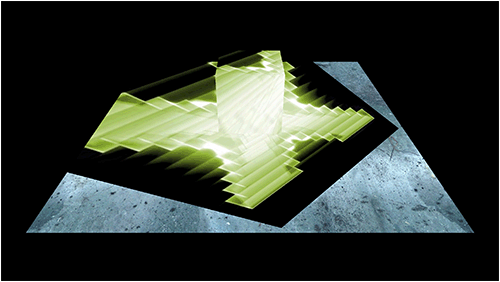
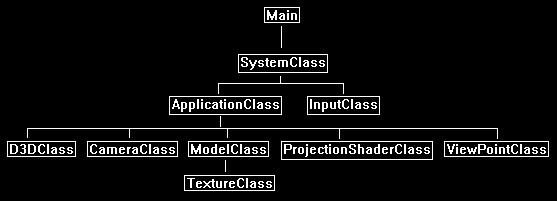

This tutorial will cover projective texturing in DirectX 11 using HLSL and C++.
Projective texturing is one of the most critical concepts you need to have a strong understanding of to perform most of the advanced rendering techniques for real time applications.
For example, soft shadows, water, projective light maps, and reflections all require projective texturing.
Projective texturing simply put is just projecting a 2D texture onto a 3D scene from a specific view point.
It works in a similar fashion to the way we use a camera view point to render a 3D scene onto the 2D back buffer.
We first create a viewing frustum from the view point from where we want to project the texture from.
This would look something like the following:

Then whenever we find that the viewing frustum has intersected with another 3D object, we would draw a pixel from the texture that matches the projected location.
For example, if we projected a texture onto a blue plane, we would end up rendering the texture inside the green boundary area that intersects with the blue 3D plane:

For this tutorial we will start with the following 3D scene of a cube sitting on a plane:

Then we will use the following texture as the texture we want to project onto our 3D scene:
Then we will setup the view point from where we want to project and also the location to where we want to project.
The "from" location will be called the view point, and the "to" location will be called the look at point.
In this example our from location (view point) will be behind the camera to the upper right corner of the scene.
And we will set the location to project to (the look at point) as the center of the scene.
We then setup a view and projection matrix with these parameters and then render the scene projecting the texture onto it.
This gives us the following result:

Framework
The framework has two new classes added to it.
The new ProjectionShaderClass handles the shader functionality for rendering using an additional projection setup.
And the new ViewPointClass provides us a class that encapsulates the location we want to view the scene from, as well as creating the needed matrices for that view point.

We will start the code section of the tutorial by looking at the projection shader GLSL code first.
Projection.vs
////////////////////////////////////////////////////////////////////////////////
// Filename: projection.vs
////////////////////////////////////////////////////////////////////////////////
/////////////
// GLOBALS //
/////////////
cbuffer MatrixBuffer
{
matrix worldMatrix;
matrix viewMatrix;
matrix projectionMatrix;
We will require a separate view matrix and projection matrix for the view point that we want to project the texture from.
matrix viewMatrix2;
matrix projectionMatrix2;
};
//////////////
// TYPEDEFS //
//////////////
struct VertexInputType
{
float4 position : POSITION;
float2 tex : TEXCOORD0;
};
struct PixelInputType
{
float4 position : SV_POSITION;
float2 tex : TEXCOORD0;
The viewPosition is the position of the vertice as viewed by the location where we are going to the project the texture from.
float4 viewPosition : TEXCOORD1;
};
////////////////////////////////////////////////////////////////////////////////
// Vertex Shader
////////////////////////////////////////////////////////////////////////////////
PixelInputType ProjectionVertexShader(VertexInputType input)
{
PixelInputType output;
// Change the position vector to be 4 units for proper matrix calculations.
input.position.w = 1.0f;
// Calculate the position of the vertex against the world, view, and projection matrices.
output.position = mul(input.position, worldMatrix);
output.position = mul(output.position, viewMatrix);
output.position = mul(output.position, projectionMatrix);
Calculate the position of the vertice from the view point of where we are projecting the texture from.
Note we can use the regular world matrix but we use the second pair of view and projection matrices.
// Store the position of the vertice as viewed by the projection view point in a separate variable.
output.viewPosition = mul(input.position, worldMatrix);
output.viewPosition = mul(output.viewPosition, viewMatrix2);
output.viewPosition = mul(output.viewPosition, projectionMatrix2);
// Store the texture coordinates for the pixel shader.
output.tex = input.tex;
return output;
}
Projection.ps
////////////////////////////////////////////////////////////////////////////////
// Filename: projection.ps
////////////////////////////////////////////////////////////////////////////////
/////////////
// GLOBALS //
/////////////
Texture2D shaderTexture : register(t0);
The projectionTexture is the texture that we will be projecting onto the scene.
Texture2D projectionTexture : register(t1);
SamplerState SampleType : register(s0);
//////////////
// TYPEDEFS //
//////////////
struct PixelInputType
{
float4 position : SV_POSITION;
float2 tex : TEXCOORD0;
float4 viewPosition : TEXCOORD1;
};
////////////////////////////////////////////////////////////////////////////////
// Pixel Shader
////////////////////////////////////////////////////////////////////////////////
float4 ProjectionPixelShader(PixelInputType input) : SV_TARGET
{
float2 projectTexCoord;
float4 color;
Now we calculate the projection coordinates for sampling the projected texture from.
These coordinates are the position the vertex is being viewed from by the location of the projection view point.
The coordinates are translated into 2D screen coordinates and moved into the 0.0f to 1.0f range from the -0.5f to +0.5f range.
// Calculate the projected texture coordinates.
projectTexCoord.x = input.viewPosition.x / input.viewPosition.w / 2.0f + 0.5f;
projectTexCoord.y = -input.viewPosition.y / input.viewPosition.w / 2.0f + 0.5f;
Next, we need to check if the coordinates are in the 0.0f to 1.0f range.
If it is inside the 0.0f to 1.0f range then this pixel is inside the projected texture area and we need to apply the projected texture to the output pixel.
If they are not in that range then this pixel is not in the projection area, so it is just textured with the regular texture.
// Determine if the projected coordinates are in the 0 to 1 range. If it is then this pixel is inside the projected view port.
if((saturate(projectTexCoord.x) == projectTexCoord.x) && (saturate(projectTexCoord.y) == projectTexCoord.y))
{
// Sample the color value from the projection texture using the sampler at the projected texture coordinate location.
color = projectionTexture.Sample(SampleType, projectTexCoord);
}
else
{
// Sample the pixel color from the texture using the sampler at this texture coordinate location.
color = shaderTexture.Sample(SampleType, input.tex);
}
return color;
}
Projectionshaderclass.h
The ProjectionShaderClass is just the TextureShaderClass rewritten to handle the additional texture projection.
////////////////////////////////////////////////////////////////////////////////
// Filename: projectionshaderclass.h
////////////////////////////////////////////////////////////////////////////////
#ifndef _PROJECTIONSHADERCLASS_H_
#define _PROJECTIONSHADERCLASS_H_
//////////////
// INCLUDES //
//////////////
#include <d3d11.h>
#include <d3dcompiler.h>
#include <directxmath.h>
#include <fstream>
using namespace DirectX;
using namespace std;
////////////////////////////////////////////////////////////////////////////////
// Class name: ProjectionShaderClass
////////////////////////////////////////////////////////////////////////////////
class ProjectionShaderClass
{
private:
struct MatrixBufferType
{
XMMATRIX world;
XMMATRIX view;
XMMATRIX projection;
We will require a view matrix and a projection matrix from the view point of the projection to perform projected texturing.
XMMATRIX view2;
XMMATRIX projection2;
};
public:
ProjectionShaderClass();
ProjectionShaderClass(const ProjectionShaderClass&);
~ProjectionShaderClass();
bool Initialize(ID3D11Device*, HWND);
void Shutdown();
bool Render(ID3D11DeviceContext*, int, XMMATRIX, XMMATRIX, XMMATRIX, XMMATRIX, XMMATRIX, ID3D11ShaderResourceView*, ID3D11ShaderResourceView*);
private:
bool InitializeShader(ID3D11Device*, HWND, WCHAR*, WCHAR*);
void ShutdownShader();
void OutputShaderErrorMessage(ID3D10Blob*, HWND, WCHAR*);
bool SetShaderParameters(ID3D11DeviceContext*, XMMATRIX, XMMATRIX, XMMATRIX, XMMATRIX, XMMATRIX, ID3D11ShaderResourceView*, ID3D11ShaderResourceView*);
void RenderShader(ID3D11DeviceContext*, int);
private:
ID3D11VertexShader* m_vertexShader;
ID3D11PixelShader* m_pixelShader;
ID3D11InputLayout* m_layout;
ID3D11Buffer* m_matrixBuffer;
ID3D11SamplerState* m_sampleState;
};
#endif
Projectionshaderclass.cpp
////////////////////////////////////////////////////////////////////////////////
// Filename: projectionshaderclass.cpp
////////////////////////////////////////////////////////////////////////////////
#include "projectionshaderclass.h"
ProjectionShaderClass::ProjectionShaderClass()
{
m_vertexShader = 0;
m_pixelShader = 0;
m_layout = 0;
m_matrixBuffer = 0;
m_sampleState = 0;
}
ProjectionShaderClass::ProjectionShaderClass(const ProjectionShaderClass& other)
{
}
ProjectionShaderClass::~ProjectionShaderClass()
{
}
bool ProjectionShaderClass::Initialize(ID3D11Device* device, HWND hwnd)
{
wchar_t vsFilename[128], psFilename[128];
int error;
bool result;
We load the projection.vs and projection.ps HLSL shader files here.
// Set the filename of the vertex shader.
error = wcscpy_s(vsFilename, 128, L"../Engine/projection.vs");
if(error != 0)
{
return false;
}
// Set the filename of the pixel shader.
error = wcscpy_s(psFilename, 128, L"../Engine/projection.ps");
if(error != 0)
{
return false;
}
// Initialize the vertex and pixel shaders.
result = InitializeShader(device, hwnd, vsFilename, psFilename);
if(!result)
{
return false;
}
return true;
}
void ProjectionShaderClass::Shutdown()
{
// Shutdown the vertex and pixel shaders as well as the related objects.
ShutdownShader();
return;
}
bool ProjectionShaderClass::Render(ID3D11DeviceContext* deviceContext, int indexCount, XMMATRIX worldMatrix, XMMATRIX viewMatrix, XMMATRIX projectionMatrix,
XMMATRIX viewMatrix2, XMMATRIX projectionMatrix2, ID3D11ShaderResourceView* texture, ID3D11ShaderResourceView* projectionTexture)
{
bool result;
// Set the shader parameters that it will use for rendering.
result = SetShaderParameters(deviceContext, worldMatrix, viewMatrix, projectionMatrix, viewMatrix2, projectionMatrix2, texture, projectionTexture);
if(!result)
{
return false;
}
// Now render the prepared buffers with the shader.
RenderShader(deviceContext, indexCount);
return true;
}
bool ProjectionShaderClass::InitializeShader(ID3D11Device* device, HWND hwnd, WCHAR* vsFilename, WCHAR* psFilename)
{
HRESULT result;
ID3D10Blob* errorMessage;
ID3D10Blob* vertexShaderBuffer;
ID3D10Blob* pixelShaderBuffer;
D3D11_INPUT_ELEMENT_DESC polygonLayout[2];
unsigned int numElements;
D3D11_BUFFER_DESC matrixBufferDesc;
D3D11_SAMPLER_DESC samplerDesc;
// Initialize the pointers this function will use to null.
errorMessage = 0;
vertexShaderBuffer = 0;
pixelShaderBuffer = 0;
Compile the projection vertex shader.
// Compile the vertex shader code.
result = D3DCompileFromFile(vsFilename, NULL, NULL, "ProjectionVertexShader", "vs_5_0", D3D10_SHADER_ENABLE_STRICTNESS, 0,
&vertexShaderBuffer, &errorMessage);
if(FAILED(result))
{
// If the shader failed to compile it should have writen something to the error message.
if(errorMessage)
{
OutputShaderErrorMessage(errorMessage, hwnd, vsFilename);
}
// If there was nothing in the error message then it simply could not find the shader file itself.
else
{
MessageBox(hwnd, vsFilename, L"Missing Shader File", MB_OK);
}
return false;
}
Compile the projection pixel shader.
// Compile the pixel shader code.
result = D3DCompileFromFile(psFilename, NULL, NULL, "ProjectionPixelShader", "ps_5_0", D3D10_SHADER_ENABLE_STRICTNESS, 0,
&pixelShaderBuffer, &errorMessage);
if(FAILED(result))
{
// If the shader failed to compile it should have writen something to the error message.
if(errorMessage)
{
OutputShaderErrorMessage(errorMessage, hwnd, psFilename);
}
// If there was nothing in the error message then it simply could not find the file itself.
else
{
MessageBox(hwnd, psFilename, L"Missing Shader File", MB_OK);
}
return false;
}
// Create the vertex shader from the buffer.
result = device->CreateVertexShader(vertexShaderBuffer->GetBufferPointer(), vertexShaderBuffer->GetBufferSize(), NULL, &m_vertexShader);
if(FAILED(result))
{
return false;
}
// Create the pixel shader from the buffer.
result = device->CreatePixelShader(pixelShaderBuffer->GetBufferPointer(), pixelShaderBuffer->GetBufferSize(), NULL, &m_pixelShader);
if(FAILED(result))
{
return false;
}
// Create the vertex input layout description.
polygonLayout[0].SemanticName = "POSITION";
polygonLayout[0].SemanticIndex = 0;
polygonLayout[0].Format = DXGI_FORMAT_R32G32B32_FLOAT;
polygonLayout[0].InputSlot = 0;
polygonLayout[0].AlignedByteOffset = 0;
polygonLayout[0].InputSlotClass = D3D11_INPUT_PER_VERTEX_DATA;
polygonLayout[0].InstanceDataStepRate = 0;
polygonLayout[1].SemanticName = "TEXCOORD";
polygonLayout[1].SemanticIndex = 0;
polygonLayout[1].Format = DXGI_FORMAT_R32G32_FLOAT;
polygonLayout[1].InputSlot = 0;
polygonLayout[1].AlignedByteOffset = D3D11_APPEND_ALIGNED_ELEMENT;
polygonLayout[1].InputSlotClass = D3D11_INPUT_PER_VERTEX_DATA;
polygonLayout[1].InstanceDataStepRate = 0;
// Get a count of the elements in the layout.
numElements = sizeof(polygonLayout) / sizeof(polygonLayout[0]);
// Create the vertex input layout.
result = device->CreateInputLayout(polygonLayout, numElements, vertexShaderBuffer->GetBufferPointer(), vertexShaderBuffer->GetBufferSize(), &m_layout);
if(FAILED(result))
{
return false;
}
// Release the vertex shader buffer and pixel shader buffer since they are no longer needed.
vertexShaderBuffer->Release();
vertexShaderBuffer = 0;
pixelShaderBuffer->Release();
pixelShaderBuffer = 0;
// Setup the description of the dynamic matrix constant buffer that is in the vertex shader.
matrixBufferDesc.Usage = D3D11_USAGE_DYNAMIC;
matrixBufferDesc.ByteWidth = sizeof(MatrixBufferType);
matrixBufferDesc.BindFlags = D3D11_BIND_CONSTANT_BUFFER;
matrixBufferDesc.CPUAccessFlags = D3D11_CPU_ACCESS_WRITE;
matrixBufferDesc.MiscFlags = 0;
matrixBufferDesc.StructureByteStride = 0;
// Create the constant buffer pointer so we can access the vertex shader constant buffer from within this class.
result = device->CreateBuffer(&matrixBufferDesc, NULL, &m_matrixBuffer);
if(FAILED(result))
{
return false;
}
// Create a texture sampler state description.
samplerDesc.Filter = D3D11_FILTER_MIN_MAG_MIP_LINEAR;
samplerDesc.AddressU = D3D11_TEXTURE_ADDRESS_CLAMP;
samplerDesc.AddressV = D3D11_TEXTURE_ADDRESS_CLAMP;
samplerDesc.AddressW = D3D11_TEXTURE_ADDRESS_CLAMP;
samplerDesc.MipLODBias = 0.0f;
samplerDesc.MaxAnisotropy = 1;
samplerDesc.ComparisonFunc = D3D11_COMPARISON_ALWAYS;
samplerDesc.BorderColor[0] = 0;
samplerDesc.BorderColor[1] = 0;
samplerDesc.BorderColor[2] = 0;
samplerDesc.BorderColor[3] = 0;
samplerDesc.MinLOD = 0;
samplerDesc.MaxLOD = D3D11_FLOAT32_MAX;
// Create the texture sampler state.
result = device->CreateSamplerState(&samplerDesc, &m_sampleState);
if(FAILED(result))
{
return false;
}
return true;
}
void ProjectionShaderClass::ShutdownShader()
{
// Release the sampler state.
if(m_sampleState)
{
m_sampleState->Release();
m_sampleState = 0;
}
// Release the matrix constant buffer.
if(m_matrixBuffer)
{
m_matrixBuffer->Release();
m_matrixBuffer = 0;
}
// Release the layout.
if(m_layout)
{
m_layout->Release();
m_layout = 0;
}
// Release the pixel shader.
if(m_pixelShader)
{
m_pixelShader->Release();
m_pixelShader = 0;
}
// Release the vertex shader.
if(m_vertexShader)
{
m_vertexShader->Release();
m_vertexShader = 0;
}
return;
}
void ProjectionShaderClass::OutputShaderErrorMessage(ID3D10Blob* errorMessage, HWND hwnd, WCHAR* shaderFilename)
{
char* compileErrors;
unsigned long long bufferSize, i;
ofstream fout;
// Get a pointer to the error message text buffer.
compileErrors = (char*)(errorMessage->GetBufferPointer());
// Get the length of the message.
bufferSize = errorMessage->GetBufferSize();
// Open a file to write the error message to.
fout.open("shader-error.txt");
// Write out the error message.
for(i=0; i<bufferSize; i++)
{
fout << compileErrors[i];
}
// Close the file.
fout.close();
// Release the error message.
errorMessage->Release();
errorMessage = 0;
// Pop a message up on the screen to notify the user to check the text file for compile errors.
MessageBox(hwnd, L"Error compiling shader. Check shader-error.txt for message.", shaderFilename, MB_OK);
return;
}
The SetShaderParameters now has two additional input matrices for calculating the projection coordinates.
It also has an additional texture which will be used as the texture to project onto the scene.
bool ProjectionShaderClass::SetShaderParameters(ID3D11DeviceContext* deviceContext, XMMATRIX worldMatrix, XMMATRIX viewMatrix, XMMATRIX projectionMatrix,
XMMATRIX viewMatrix2, XMMATRIX projectionMatrix2, ID3D11ShaderResourceView* texture, ID3D11ShaderResourceView* projectionTexture)
{
HRESULT result;
D3D11_MAPPED_SUBRESOURCE mappedResource;
MatrixBufferType* dataPtr;
unsigned int bufferNumber;
// Transpose the matrices to prepare them for the shader.
worldMatrix = XMMatrixTranspose(worldMatrix);
viewMatrix = XMMatrixTranspose(viewMatrix);
projectionMatrix = XMMatrixTranspose(projectionMatrix);
Transpose the second view and projection matrices.
viewMatrix2 = XMMatrixTranspose(viewMatrix2);
projectionMatrix2 = XMMatrixTranspose(projectionMatrix2);
// Lock the constant buffer so it can be written to.
result = deviceContext->Map(m_matrixBuffer, 0, D3D11_MAP_WRITE_DISCARD, 0, &mappedResource);
if(FAILED(result))
{
return false;
}
// Get a pointer to the data in the constant buffer.
dataPtr = (MatrixBufferType*)mappedResource.pData;
// Copy the matrices into the constant buffer.
dataPtr->world = worldMatrix;
dataPtr->view = viewMatrix;
dataPtr->projection = projectionMatrix;
Set the two new matrices in the vertex shader.
dataPtr->view2 = viewMatrix2;
dataPtr->projection2 = projectionMatrix2;
// Unlock the constant buffer.
deviceContext->Unmap(m_matrixBuffer, 0);
// Set the position of the constant buffer in the vertex shader.
bufferNumber = 0;
// Finally set the constant buffer in the vertex shader with the updated values.
deviceContext->VSSetConstantBuffers(bufferNumber, 1, &m_matrixBuffer);
// Set shader texture resources in the pixel shader.
deviceContext->PSSetShaderResources(0, 1, &texture);
Set the projection texture in the pixel shader.
deviceContext->PSSetShaderResources(1, 1, &projectionTexture);
return true;
}
void ProjectionShaderClass::RenderShader(ID3D11DeviceContext* deviceContext, int indexCount)
{
// Set the vertex input layout.
deviceContext->IASetInputLayout(m_layout);
// Set the vertex and pixel shaders that will be used to render this triangle.
deviceContext->VSSetShader(m_vertexShader, NULL, 0);
deviceContext->PSSetShader(m_pixelShader, NULL, 0);
// Set the sampler state in the pixel shader.
deviceContext->PSSetSamplers(0, 1, &m_sampleState);
// Render the triangle.
deviceContext->DrawIndexed(indexCount, 0, 0);
return;
}
Viewpointclass.h
The ViewPointClass encapsulates the view point that we will be looking at the scene from in terms of projecting a texture.
It is similar to the LightClass or CameraClass that it has a position in the 3D world and it has a position that it is looking at in the 3D world.
With the position variables and projection variables set it can then generate a view matrix and a projection matrix to represent the view point in the 3D world.
Those two matrices can then be sent into the shader to be used to project the texture onto the 3D scene.
////////////////////////////////////////////////////////////////////////////////
// Filename: viewpointclass.h
////////////////////////////////////////////////////////////////////////////////
#ifndef _VIEWPOINTCLASS_H_
#define _VIEWPOINTCLASS_H_
//////////////
// INCLUDES //
//////////////
#include <directxmath.h>
using namespace DirectX;
////////////////////////////////////////////////////////////////////////////////
// Class name: ViewPointClass
////////////////////////////////////////////////////////////////////////////////
class ViewPointClass
{
public:
ViewPointClass();
ViewPointClass(const ViewPointClass&);
~ViewPointClass();
void SetPosition(float, float, float);
void SetLookAt(float, float, float);
void SetProjectionParameters(float, float, float, float);
void GenerateViewMatrix();
void GenerateProjectionMatrix();
void GetViewMatrix(XMMATRIX&);
void GetProjectionMatrix(XMMATRIX&);
private:
XMMATRIX m_viewMatrix, m_projectionMatrix;
XMFLOAT3 m_position, m_lookAt;
float m_fieldOfView, m_aspectRatio, m_nearPlane, m_farPlane;
};
#endif
Viewpointclass.cpp
////////////////////////////////////////////////////////////////////////////////
// Filename: viewpointclass.cpp
////////////////////////////////////////////////////////////////////////////////
#include "viewpointclass.h"
ViewPointClass::ViewPointClass()
{
}
ViewPointClass::ViewPointClass(const ViewPointClass& other)
{
}
ViewPointClass::~ViewPointClass()
{
}
void ViewPointClass::SetPosition(float x, float y, float z)
{
m_position = XMFLOAT3(x, y, z);
return;
}
void ViewPointClass::SetLookAt(float x, float y, float z)
{
m_lookAt = XMFLOAT3(x, y, z);
return;
}
void ViewPointClass::SetProjectionParameters(float fieldOfView, float aspectRatio, float nearPlane, float farPlane)
{
m_fieldOfView = fieldOfView;
m_aspectRatio = aspectRatio;
m_nearPlane = nearPlane;
m_farPlane = farPlane;
return;
}
void ViewPointClass::GenerateViewMatrix()
{
XMFLOAT3 up;
XMVECTOR upVector, positionVector, lookAtVector;
// Setup the vector that points upwards.
up.x = 0.0f;
up.y = 1.0f;
up.z = 0.0f;
// Load XMFLOAT3 variables into a XMVECTOR structures.
upVector = XMLoadFloat3(&up);
positionVector = XMLoadFloat3(&m_position);
lookAtVector = XMLoadFloat3(&m_lookAt);
// Create the view matrix from the three vectors.
m_viewMatrix = XMMatrixLookAtLH(positionVector, lookAtVector, upVector);
return;
}
void ViewPointClass::GenerateProjectionMatrix()
{
// Create the projection matrix for the view point.
m_projectionMatrix = XMMatrixPerspectiveFovLH(m_fieldOfView, m_aspectRatio, m_nearPlane, m_farPlane);
return;
}
void ViewPointClass::GetViewMatrix(XMMATRIX& viewMatrix)
{
viewMatrix = m_viewMatrix;
return;
}
void ViewPointClass::GetProjectionMatrix(XMMATRIX& projectionMatrix)
{
projectionMatrix = m_projectionMatrix;
return;
}
Applicationclass.h
////////////////////////////////////////////////////////////////////////////////
// Filename: applicationclass.h
////////////////////////////////////////////////////////////////////////////////
#ifndef _APPLICATIONCLASS_H_
#define _APPLICATIONCLASS_H_
///////////////////////
// MY CLASS INCLUDES //
///////////////////////
#include "d3dclass.h"
#include "inputclass.h"
#include "cameraclass.h"
#include "modelclass.h"
Include the new class headers required for projecting a texture onto the scene.
#include "projectionshaderclass.h"
#include "viewpointclass.h"
/////////////
// GLOBALS //
/////////////
const bool FULL_SCREEN = false;
const bool VSYNC_ENABLED = true;
const float SCREEN_DEPTH = 1000.0f;
const float SCREEN_NEAR = 0.3f;
////////////////////////////////////////////////////////////////////////////////
// Class name: ApplicationClass
////////////////////////////////////////////////////////////////////////////////
class ApplicationClass
{
public:
ApplicationClass();
ApplicationClass(const ApplicationClass&);
~ApplicationClass();
bool Initialize(int, int, HWND);
void Shutdown();
bool Frame(InputClass*);
private:
bool Render();
private:
D3DClass* m_Direct3D;
CameraClass* m_Camera;
We will use a ground model and the regular cube model to make a simple scene to project the texture onto.
ModelClass *m_GroundModel, *m_CubeModel;
This is the new projection shader class object.
ProjectionShaderClass* m_ProjectionShader;
The is the texture object we will use to load a texture and project it onto the scene.
TextureClass* m_ProjectionTexture;
The is the new view point class object for building the matrices that represent the view point we want to project the texture from.
ViewPointClass* m_ViewPoint;
};
#endif
Applicationclass.cpp
////////////////////////////////////////////////////////////////////////////////
// Filename: applicationclass.cpp
////////////////////////////////////////////////////////////////////////////////
#include "applicationclass.h"
Initialize the pointers to null in the class constructor.
ApplicationClass::ApplicationClass()
{
m_Direct3D = 0;
m_Camera = 0;
m_GroundModel = 0;
m_CubeModel = 0;
m_ProjectionShader = 0;
m_ProjectionTexture = 0;
m_ViewPoint = 0;
}
ApplicationClass::ApplicationClass(const ApplicationClass& other)
{
}
ApplicationClass::~ApplicationClass()
{
}
bool ApplicationClass::Initialize(int screenWidth, int screenHeight, HWND hwnd)
{
char modelFilename[128], textureFilename[128];
bool result;
// Create and initialize the Direct3D object.
m_Direct3D = new D3DClass;
result = m_Direct3D->Initialize(screenWidth, screenHeight, VSYNC_ENABLED, hwnd, FULL_SCREEN, SCREEN_DEPTH, SCREEN_NEAR);
if(!result)
{
MessageBox(hwnd, L"Could not initialize Direct3D.", L"Error", MB_OK);
return false;
}
Setup the camera to view the scene a bit further up so we can see the entire projection easily.
// Create and initialize the camera object.
m_Camera = new CameraClass;
m_Camera->SetPosition(0.0f, 7.0f, -10.0f);
m_Camera->SetRotation(35.0f, 0.0f, 0.0f);
m_Camera->Render();
Setup the ground model.
// Create and initialize the ground model object.
m_GroundModel = new ModelClass;
strcpy_s(modelFilename, "../Engine/data/plane01.txt");
strcpy_s(textureFilename, "../Engine/data/metal001.tga");
result = m_GroundModel->Initialize(m_Direct3D->GetDevice(), m_Direct3D->GetDeviceContext(), modelFilename, textureFilename);
if(!result)
{
MessageBox(hwnd, L"Could not initialize the ground model object.", L"Error", MB_OK);
return false;
}
Setup the cube model.
// Create and initialize the cube model object.
m_CubeModel = new ModelClass;
strcpy_s(modelFilename, "../Engine/data/cube.txt");
strcpy_s(textureFilename, "../Engine/data/stone01.tga");
result = m_CubeModel->Initialize(m_Direct3D->GetDevice(), m_Direct3D->GetDeviceContext(), modelFilename, textureFilename);
if (!result)
{
MessageBox(hwnd, L"Could not initialize the cube model object.", L"Error", MB_OK);
return false;
}
Setup our new projection shader object.
// Create and initialize the projection shader object.
m_ProjectionShader = new ProjectionShaderClass;
result = m_ProjectionShader->Initialize(m_Direct3D->GetDevice(), hwnd);
if(!result)
{
MessageBox(hwnd, L"Could not initialize the projection shader object.", L"Error", MB_OK);
return false;
}
Setup the DirectX logo texture that we will project onto the 3D scene.
// Create the projection texture object.
m_ProjectionTexture = new TextureClass;
strcpy_s(textureFilename, "../Engine/data/directx_logo.tga");
result = m_ProjectionTexture->Initialize(m_Direct3D->GetDevice(), m_Direct3D->GetDeviceContext(), textureFilename);
if(!result)
{
MessageBox(hwnd, L"Could not initialize the projection texture object.", L"Error", MB_OK);
return false;
}
Setup the view point object to view the scene from a specific location, and have it build the two matrices for that location.
// Create and initialize the view point object.
m_ViewPoint = new ViewPointClass;
m_ViewPoint->SetPosition(2.0f, 5.0f, -2.0f);
m_ViewPoint->SetLookAt(0.0f, 0.0f, 0.0f);
m_ViewPoint->SetProjectionParameters((3.14159265358979323846f / 2.0f), 1.0f, 0.1f, 100.0f);
m_ViewPoint->GenerateViewMatrix();
m_ViewPoint->GenerateProjectionMatrix();
return true;
}
We release the class objects in the Shutdown function.
void ApplicationClass::Shutdown()
{
// Release the view point object.
if(m_ViewPoint)
{
delete m_ViewPoint;
m_ViewPoint = 0;
}
// Release the projection texture object.
if(m_ProjectionTexture)
{
m_ProjectionTexture->Shutdown();
delete m_ProjectionTexture;
m_ProjectionTexture = 0;
}
// Release the projection shader object.
if(m_ProjectionShader)
{
m_ProjectionShader->Shutdown();
delete m_ProjectionShader;
m_ProjectionShader = 0;
}
// Release the cube model object.
if(m_CubeModel)
{
m_CubeModel->Shutdown();
delete m_CubeModel;
m_CubeModel = 0;
}
// Release the ground model object.
if(m_GroundModel)
{
m_GroundModel->Shutdown();
delete m_GroundModel;
m_GroundModel = 0;
}
// Release the camera object.
if(m_Camera)
{
delete m_Camera;
m_Camera = 0;
}
// Release the Direct3D object.
if(m_Direct3D)
{
m_Direct3D->Shutdown();
delete m_Direct3D;
m_Direct3D = 0;
}
return;
}
bool ApplicationClass::Frame(InputClass* Input)
{
bool result;
// Check if the user pressed escape and wants to exit the application.
if(Input->IsEscapePressed())
{
return false;
}
// Render the graphics scene.
result = Render();
if(!result)
{
return false;
}
return true;
}
bool ApplicationClass::Render()
{
XMMATRIX worldMatrix, viewMatrix, projectionMatrix, viewMatrix2, projectionMatrix2;
bool result;
// Clear the buffers to begin the scene.
m_Direct3D->BeginScene(0.0f, 0.0f, 0.0f, 1.0f);
// Get the world, view, and projection matrices from the camera and d3d objects.
m_Direct3D->GetWorldMatrix(worldMatrix);
m_Camera->GetViewMatrix(viewMatrix);
m_Direct3D->GetProjectionMatrix(projectionMatrix);
Get the second view and projection matrix from the view point object.
These two matrices will be used for projecting the texture.
// Get the view and projection matrices from the view point object.
m_ViewPoint->GetViewMatrix(viewMatrix2);
m_ViewPoint->GetProjectionMatrix(projectionMatrix2);
Next render the ground model using the projection shader and the two new matrices to project the texture onto the ground model.
// Setup the translation for the ground model.
worldMatrix = XMMatrixTranslation(0.0f, 1.0f, 0.0f);
// Render the ground model using the projection shader..
m_GroundModel->Render(m_Direct3D->GetDeviceContext());
result = m_ProjectionShader->Render(m_Direct3D->GetDeviceContext(), m_GroundModel->GetIndexCount(), worldMatrix, viewMatrix, projectionMatrix, viewMatrix2, projectionMatrix2, m_GroundModel->GetTexture(), m_ProjectionTexture->GetTexture());
if(!result)
{
return false;
}
Finally render the cube model using the projection shader and the two new matrices to project the texture onto the cube model.
// Setup the translation for the cube model.
worldMatrix = XMMatrixTranslation(0.0f, 2.0f, 0.0f);
// Render the ground model using the projection shader..
m_CubeModel->Render(m_Direct3D->GetDeviceContext());
result = m_ProjectionShader->Render(m_Direct3D->GetDeviceContext(), m_CubeModel->GetIndexCount(), worldMatrix, viewMatrix, projectionMatrix, viewMatrix2, projectionMatrix2, m_CubeModel->GetTexture(), m_ProjectionTexture->GetTexture());
if(!result)
{
return false;
}
// Present the rendered scene to the screen.
m_Direct3D->EndScene();
return true;
}
Summary
We can now project 2D textures onto 3D scenes from any defined view point.
To Do Exercises
1. Recompile and run the program. You will see a 3D scene with a 2D texture projected onto it.
2. Change the texture that is being projected onto the scene.
3. Set the cube to rotate to see the effect of the projected texture on it.
4. Modify the location of the view point.
5. Modify the projection parameters of the view point to create a different shaped projection.
Source Code
Source Code and Data Files: dx11win10tut39_src.zip